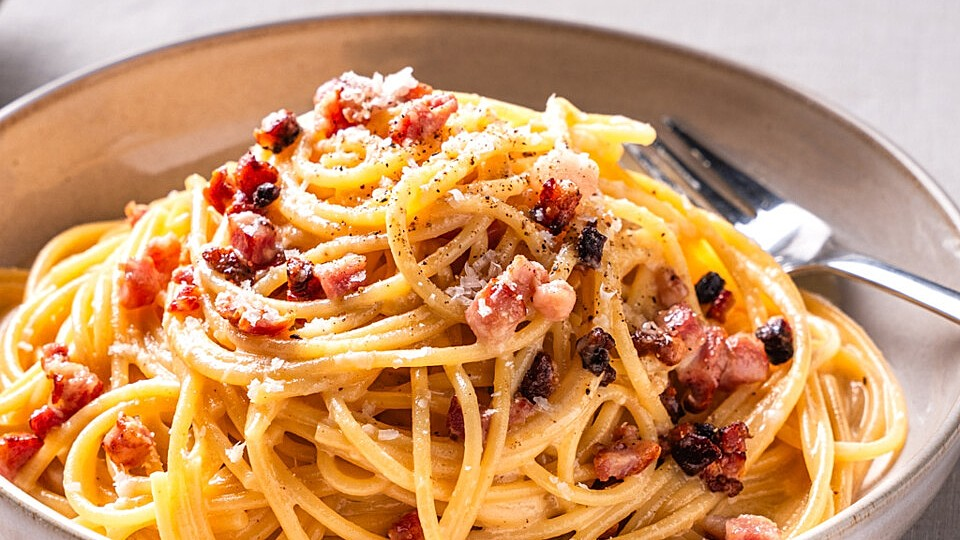

Spaghetti Carbonara

An delicious recipe: The traditional Spaghetti Carbonara from Italy
One of Italians favorites pasta recipe is the Spaghetti Carbonara.
The best part about is, that in other countries many people are cooking it different. Some people are cooking it with cream, some with or without butter, or like melted cheese.
But I want to show how easy it can be to cook this recipe in the traditional way. All you need for it is:
- Guanciale (Ham)
- Pecorino Romano (cheese)
- Spaghetti (noodles)
- Cooked salted water
- Two times yellow part from the egg
- Three whole eggs
- Olive oil
- For the first part we grate the cheese into a bowl so we have 100 grams of it
- Then we put in the same bowl two egg yolk and three whole eggs in it
- After that we start to heat our pan were we will cook our Guanciale
- Now if the pan is starting to heat, we cut our Guanciale in to elongated peaces
- When we put our Guanciale in our pan we can start to boil our water for the Spaghettis. For that we have to take arround 1.7 litres. Find out what your pot needs to cook your Spaghettis!
- When the Spaghettis are completely cooked, then remove two ladles of the cooking water and save it for the next step!
- On our last step, we have to put all our stuff together (be careful with the noodle water, dont make it too wet!). Look for something, like a Wok where u have enough space to give everything together and mix it. For the best results throw the noodles to the cooked bacon where there is some oil left, and on the noodles you give the Carbonara sauce in it and mix it well. Now your Carbonara is ready to eat.
- Enjoy this masterpiece!
Index